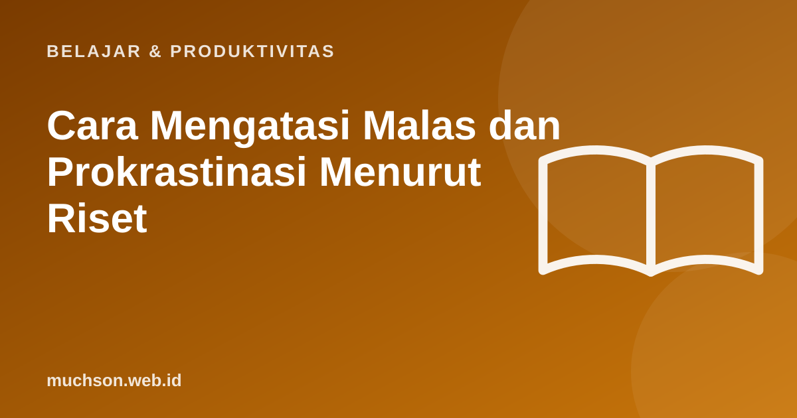

Beranda › Artikel › Belajar & Produktivitas
Belajar & ProduktivitasCara Mengatasi Malas dan Prokrastinasi Menurut Riset
Tugas sudah jelas, tenggat semakin dekat, tetapi tangan malah membuka media sosial. Prokrastinasi bukan sekadar malas atau kurang disiplin. Riset psikologi menunjukkan ia lebih berkaitan dengan cara kita mengelola emosi tidak nyaman dan cara tugas dirancang. Kabar baiknya, ada strategi yang terbukti membantu.

Kenapa kita menunda?
Piers Steel (2007) dalam meta-analisis besar di Psychological Bulletin merangkum penelitian prokrastinasi dan merumuskan faktor-faktor yang membuat kita menunda. Secara sederhana: motivasi naik bila kita yakin bisa dan tugasnya terasa bernilai, dan turun bila kita mudah teralihkan dan hasilnya terasa jauh di masa depan.
Riset prokrastinasi juga menyoroti peran emosi: kita sering menunda untuk menghindari rasa cemas, bosan, atau takut gagal yang muncul saat memikirkan tugas. Menunda memberi lega sesaat, lalu rasa bersalah datang belakangan.
Strategi yang terbukti membantu
1. Rumus "jika-maka" (implementation intention)
Peter Gollwitzer meneliti rencana berbentuk "Jika situasi X terjadi, maka saya melakukan Y". Meta-analisis Gollwitzer dan Sheeran (2006) menemukan rencana spesifik seperti ini meningkatkan pencapaian tujuan dengan efek yang cukup besar dibanding sekadar niat. Contoh: "Jika selesai makan malam, maka saya membuka laptop dan menulis 200 kata."
2. Pecah sampai langkah pertama terasa mudah
"Kerjakan skripsi" terlalu besar dan samar. "Buka dokumen, tulis judul subbab 2.1" jelas dan kecil. Langkah pertama yang mudah mengurangi rasa enggan untuk memulai.
3. Aturan 2 menit dan "5 menit saja"
Bila sesuatu bisa selesai dalam 2 menit, kerjakan sekarang. Untuk tugas besar, janjikan pada diri sendiri hanya 5 menit. Seringkali, setelah mulai, rasa enggan menghilang dan Anda melanjutkan.
4. Atur lingkungan, bukan hanya tekad
Menjauhkan HP ke ruangan lain, menutup tab yang tidak perlu, dan memakai pemblokir situs jauh lebih andal daripada mengandalkan kemauan. Penelitian Ward dan rekan (2017) bahkan menemukan keberadaan smartphone di meja saja, walau tidak dipakai, berkaitan dengan kapasitas kognitif yang lebih rendah.
5. Maafkan diri sendiri
Studi pada mahasiswa (Wohl, Pychyl, dan Bennett, 2010) menemukan mereka yang memaafkan diri sendiri setelah menunda belajar untuk ujian pertama cenderung lebih sedikit menunda untuk ujian berikutnya. Menyalahkan diri berlebihan justru menambah emosi negatif yang memicu penundaan.
Mulai sekarang: 5 menit
Tanya jawab
Apa penyebab prokrastinasi?
Apakah prokrastinasi sama dengan malas?
Apa itu implementation intention?
Kapan prokrastinasi perlu bantuan profesional?
Sumber dan bacaan lanjut
- Steel, P. (2007). The nature of procrastination: A meta-analytic and theoretical review. Psychological Bulletin
- Gollwitzer, P. M., & Sheeran, P. (2006). Implementation intentions and goal achievement: A meta-analysis
- Ward, A. F. dkk. (2017). Brain Drain: The mere presence of one's own smartphone reduces available cognitive capacity
- Wohl, M. J. A., Pychyl, T. A., & Bennett, S. H. (2010). I forgive myself, now I can study